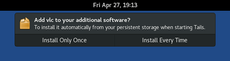

Which additional software can I install in Tails?
Tails includes a limited set of applications but you can install more software.
This software is distributed in packages that are made available from the Debian repositories, which are similar to an app store.
To know which packages are available in Debian:
Browse locally with the Synaptic Package Manager:
Set up an administration password when you start Tails.
Choose .
Wait until Synaptic finishes downloading new package information from the Debian servers.
You can:
Browse the packages by sections from the left sidebar.
Search on titles and descriptions of packages with the Search button.
Search the Internet for alternatives to other software.
For example: "debian alternatives to photoshop".
Ask a friend who is knowledgeable about Linux.
Search the Debian website.
Being careful about what you install
The packages included in Tails are carefully tested for security. Installing additional packages might break the security built in Tails. For example, installing OpenVPN might modify the firewall rules that Tails uses to force network traffic to go through Tor. So, be careful with what you install.
If you are unsure:
Packages that use the network need to be configured to go through Tor. They are otherwise blocked from accessing the network.
Some software might, for example, modify the firewall and break the security built in Tails. But other software like games or office tools are probably fine.
Software not officially included in Tails might have not been tested for security. We also cannot provide support or documentation for it.
Only applications that are packaged for Debian can be installed and they are under public scrutiny.
Examples of additional useful software
Language packs
- for LibreOffice: libreoffice-l10n-lang
- for Thunderbird: thunderbird-l10n-lang
Replace lang with the code for your language. For example, es for Spanish or de for German.
Spell-checking dictionaries
- hunspell-lang
The hunspell dictionaries are used for spell-checking by Tor Browser, LibreOffice, Thunderbird, and many other applications.
Replace lang with the code for your language. For example, es for Spanish or de for German.
Installing additional software
To install a package using Synaptic:
Set up an administration password when you start Tails.
Choose .
Click Search and search for the name of the package.
Right-click (on Mac, click with two fingers) on the name of the package in the search results and choose .
Synaptic calculates the additional changes for your package to work. Click Mark to confirm those changes.
Click Apply to download, install, and configure the package.
If you are comfortable with the command line, you can use the apt command instead.
Installing additional software automatically when starting Tails
To install an additional package automatically when starting Tails:
Turn on the Additional Software feature of the Persistent Storage.
Install the package using Synaptic or the apt command.
After the package is installed, a notification appears to ask if you want to install this package every time you start Tails in the future.

If you choose Install Every Time, the package is saved in the Persistent Storage and will be reinstalled automatically every time you start Tails.
The package will also be updated automatically when you connect to the Internet.
If you choose Install Only Once, the package is also saved in the Persistent Storage but won't be reinstalled automatically every time you start Tails.
The same package can be reinstalled faster for some time because you won't have to download it again.
Additional configuration
Some packages require additional configuration to work. To keep their configuration across Tails sessions, advanced users can use the Dotfiles feature of the Persistent Storage.
Checking your list of additional software
To see which packages are installed automatically every time you start Tails, choose .

Click the button to remove a package from the list.
The same list is also available from the Persistent Storage settings, by clicking on the button of the Additional Software feature.
Removing additional software
When you installed the package, if you chose:
Install Only Once, you can remove it by restarting Tails.
Install Every Time, you can remove it:
Using Additional Software:
Choose .
Click the to the right of the name of the package.
Using Synaptic:
Set up an administration password when you start Tails.
Choose .
Click Search and search for the name of the package.
Right-click (on Mac, click with two fingers) on the name of the package in the search results and choose .
Click Apply to remove the package.
From the command line using apt.
After the package is removed, a notification appears to ask if you want to remove this package from your list of additional software.

Freeing space in your Persistent Storage
After you installed many packages that you are not using anymore, you can free some space in your Persistent Storage:
Set up an administration password when you start Tails.
Choose to open a Root Terminal.
Execute the following command:
apt clean
Configuring additional APT repositories (for advanced users)
The packages available in Debian are submitted to public scrutiny.
Configuring additional APT repositories might break the security built in Tails and might install software that has not even been approved by Debian. Be even more careful with what you install.
This step is usually not needed to install additional software and might be necessary only in very rare occasions.
Sometimes, you might need to configure additional APT repositories. For
example, to install packages from the non-free section of Debian. To do so:
Set up an administration password when you start Tails.
Create an apt-sources.list.d folder in your Persistent Storage:
sudo install -d -m 755 /live/persistence/TailsData_unlocked/apt-sources.list.dAs root, edit /live/persistence/TailsData_unlocked/persistence.conf, the configuration of the Persistent Storage, and add the apt-sources.list.d folder as a feature of type
link:/etc/apt/sources.list.d source=apt-sources.list.d,linkWrite your additional
sources.listfiles in the apt-sources.list.d folder. For example, to add thenon-freesections of Debian 10 (Buster), backports, and security updates, you can create a file named /live/persistence/TailsData_unlocked/apt-sources.list.d/non-free.list with the following content:deb tor+http://ftp.us.debian.org/debian/ buster non-free deb tor+http://ftp.us.debian.org/debian/ buster-backports non-free deb tor+http://security.debian.org/ buster/updates non-freeFile names must end with .list and may only contain the following characters: letters, digits, underscore, hyphen, and period.
Correct the ownership and permissions of your additional
sources.listfiles to be owned byrootand only readable by others. For example:chown root:root /live/persistence/TailsData_unlocked/apt-sources.list.d/non-free.list chmod 644 /live/persistence/TailsData_unlocked/apt-sources.list.d/non-free.listRestart Tails to apply the changes.